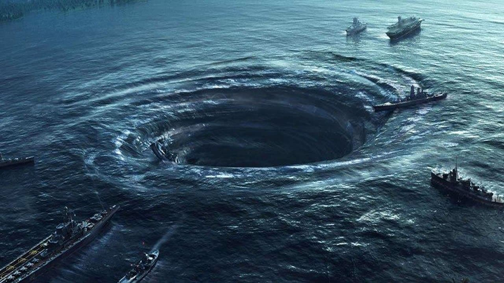
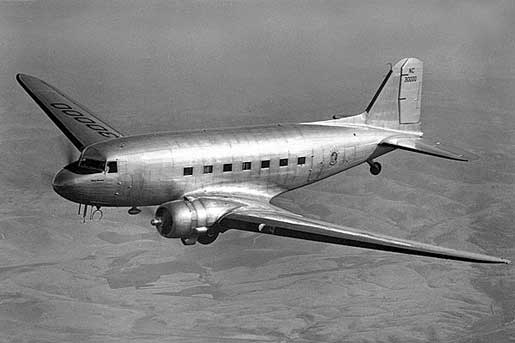

El Triángulo de las Bermudas: ¿Realidad o mito?
El Triángulo de las Bermudas es uno de los lugares más misteriosos del planeta. Decenas de historias sobre desapariciones de barcos y aviones han llegado hasta nuestros oídos de diversas maneras, siempre rodeadas de misterios y desapariciones. La última, el pasado mes de enero, cuando la Guardia Costera de Florida anunció en un comunicado que un navío con destino Florida había desaparecido tras partir el día anterior desde Bahamas. Después de 84 horas de intensa investigación, se suspendió la búsqueda sin rastro de la embarcación y sus tripulantes.
Sin embargo, ¿sabemos realmente qué es el Triángulo de las Bermudas? ¿Qué hay de leyenda y qué hay de realidad? ¿Es cierto que en esa zona geográfica del planeta desaparecen barcos, aviones y personas sin dejar rastro? Hacemos un recorrido a lo largo de los grandes sucesos de su historia para averigüar qué hay de cierto alrededor de su misteriosa fama.

Entre los misterios que el hombre siempre ha tratado de explicar, desde que pisó el mundo por primera vez, probablemente el Triángulo de las Bermudas sea uno de los más famosos. Formado por un millón y medio de kilómetros cuadrados en alta mar, coge su nombre del triángulo equilátero que forman las puntas de las islas Bermudas, Puerto Rico y Miami en Florida. Es, además, uno de los lugares favoritos de los conspiranoicos y los amantes de historias esotéricas.
Porque, si algo no es el triángulo de las Bermudas, es una zona plácida en absoluto. El inicio de su misterio debe marcarse en el año 1945, cuando una cuadrilla de cinco aviones de la Marina estadounidense, que sobrevolaba la zona, desapareció sin dejar rastro. No solo eso, también lo hizo un sexto aparato de emergencia que acudió al rescate de los cinco primeros. En total, 27 personas de las que no se volvió a saber nada nunca más, y que forjarían el principio de la famosa leyenda.
Desapariciones
USS Cyclops (1918)
Era el barco más grande de la Marina de los Estados Unidos y transportaba 11.000 toneladas de mineral de manganeso. El 3 de marzo realizó una escala no programada en Barbados y Worley reportó al cónsul de Estados Unidos que el nivel de flotación del USS Cyclops estaba por sobre dicha marca indicando sobrecarga.
Fue autorizado a navegar a Baltimore, dejando el puerto el 4 de marzo, no antes sin haber embarcado agua potable y carbón. El 9 de marzo fue avistado entre el Cabo Hatteras y Cabo Charles frente a las costas de Virginia por el SS Amalco, un buque tanquero. No volvió a saberse del USS Cyclops y su tripulación, no se encontraron restos náufragos ni señales del buque.
Aunque las propias autoridades navales de EE UU calificaron lo sucedido como "extraño", una falla estructural por la sobrecarga de mineral se entiende como causa más probable de hundimiento.
Barco SS Cotopaxi (1925)
El barco desapareció en noviembre de 1925 cuando se dirigía desde Carolina del Sur hacia La Habana. El 1 de diciembre, cuando atravesaba, supuestamente, la zona del Triángulo de las Bermudas, lanzó una llamada de socorro anunciando que se estaba hundiendo sin posibilidad de salvación. Nunca se encontraron sus restos ni los del pasaje, y 30 días después se le puso en la categoría de «desaparecido». Sus 77 metros de eslora se perdieron para siempre en las aguas del océano.
Vuelo 19 (1945)
El 5 de diciembre de 1945 un escuadrón de bombarderos TBM Avenger de la Marina de EE UU que había partido de la base aérea de Florida desapareció cuando practicaban un entrenamiento de rutina. Se trataba de pilotos nuevos, sin experiencia, excepto el jefe de la escuadrilla, quien sin embargo no había volado nunca en esa zona. La explicación más plausible es que se desorientaron y se internaron en mar abierto, más allá de las Bahamas, donde cayeron por falta de combustible.
Douglas DC-3 (1948)
El 28 de diciembre de 1948, un avión Douglas DC-3, número NC16002, desapareció en un vuelo desde San Juan, Puerto Rico, a Miami. Nunca se encontraron rastros del avión, o las 32 personas a bordo.

Connemara IV (1955)
Un yate de placer fue encontrado a la deriva en el Atlántico sur de Bermudas el 26 de septiembre de 1955. Aquel año, el huracán Ione pasó cerca del triángulo entre el 14 y el 18 de septiembre.
SS Marine Sulphur Queen (1963)
Era un inmenso buque de carga que transportaba enormes cantidades de azufre fundido. Había partido el 2 de febrero de 1963 de Beaumont (Texas) con 39 tripulantes. Todos desaparecieron en la costa sur de Florida. En la búsqueda posterior se hallaron fragmentos del barco y algunos salvavidas.
Avioneta MU-2B (2017)
El aparato despegó de Puerto Rico el 15 de mayo de 2017 con rumbo a Florida con cinco personas a bordo. La avioneta desapareció cuando superó los 7.000 metros de altitud y sin que hubiera indicios de condiciones meteorológicas adversas. Se encontraron restos de la avioneta pero no de los pasajeros ni del piloto.
Teorías del Triángulo de las Bermudas
- Atlántida
Fue el propio Charles Berlitz quien propuso la idea de que la ciudad perdida de la Atlántida era de alguna manera responsable de los naufragios y accidentes de avión en el Triángulo de las Bermudas. Desde entonces, otros se han sumado a esta teoría, argumentando que la tecnología desarrollada por los atlantes -incluyendo las energías de los cristales- sigue activa en el fondo del mar, causando fallos mecánicos en los barcos y aviones que se encuentran encima. El mayor defecto de esta teoría, por supuesto, es que la Atlántida no es real.
- Olas rebeldes
Una ola rebelde es un oleaje inusualmente grande e imprevisible, que suele ser el doble de alto que las olas que la rodean. Hace unos años, científicos de la Universidad de Southampton (Inglaterra) afirmaron que las aguas del Triángulo de las Bermudas eran especialmente propicias para este tipo de olas debido a las tormentas que se desplazan desde todos los lados. Los investigadores afirmaban que algunas olas podían alcanzar los 30 metros de altura. Aunque el trabajo de los científicos suscitó mucha atención, no pudo explicar la causa de que un avión se estrellara en el Triángulo de las Bermudas.
- Agujero negro
Algunos creen que podría ser lo que hace desaparecer a barcos y aviones que viajan por la zona, es decir, que en el cielo o las aguas de la zona de las Bermudas hay un agujero negro que absorbe, por decirlo de alguna manera, a todo aquello que pasa por él y tal vez lo transporta a otra dimensión o zona del universo. Es difícil de creer, sin embargo, puesto que un agujero negro se 'comería' todo a su paso y nada escaparía a su campo gravitatorio.
- Monstruos marinos
El Kraken es un monstruo marino de proporciones gigantescas que devora todo lo que se pone frente a él. Este y otros como él habitarían las aguas del Triángulo de las Bermudas comiéndose, literalmente, todo lo que se pone ante sus fauces. Este mito pudo venir del avistamiento por parte de marineros y piratas de calamares gigantes de 14 y 15 metros de longitud que habitan las aguas profundas de alta mar. El resto, leyenda.
- Hidratos de metano
Una explicación de algunas de las desapariciones apunta a la presencia de vastos yacimientos de hidratos de metano bajo las placas continentales. Algunos escritores han sugerido que este hidrato de metano liberado repentinamente en forma de burbujas gigantes de gas, con diámetros comparables al tamaño de un barco, podrían hundirlo, así como alterar las brújulas o indicadores de velocidad de los aviones hasta conseguir hundirlos también.